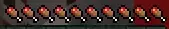
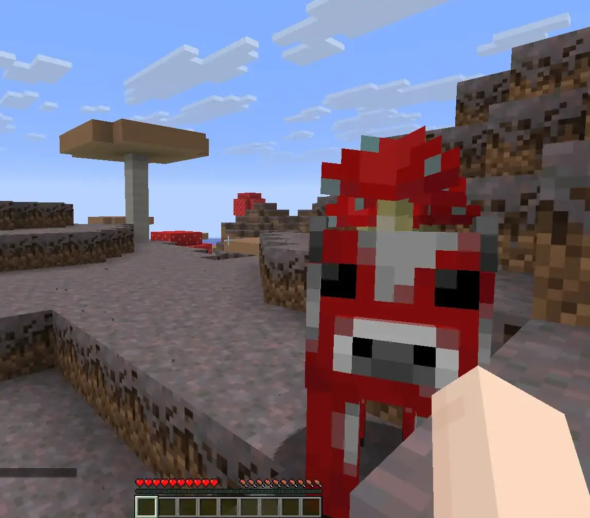
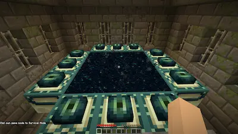
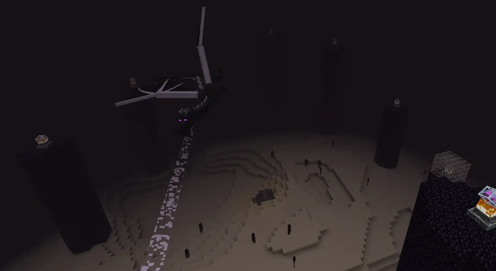

Minecraft
Minecraft formally released in 2011, November 18th for PC. In 2014 Mojang was purchased by Microsoft and Xbox Game Studios was given publishing rights for the cross-platform "Bedrock Edition" of the game. Since then, Minecraft has become the #1 best-selling game in history. It has outsold all versions of Tetris combined, also being cited as one of the greatest videogames of all time. In short: it's unlikely that you haven't heard of it.
- Released: 11/18/2011 (Alpha: 05/17/2009, Beta: 12/20/2010)
- Developed by: Mojang Studios
- Published by: Mojang Studios (Bedrock Edition: Xbox Game Studios)
- Made with: Java (Java Edition), C++ Bedrock Engine(Bedrock Edition)
{kind=link}
The game that started it all...
...At least for me. I remember in 2010 when I was 7 and I convinced my mom to get me the Minecraft Beta,
despite her claims that everything on the internet is a virus. I remember making my first world and
thinking that a patch of gravel was iron because the old textures were so crunchy. Good times. Most
players nowadays have some sort of nostalgic attatchment to Minecraft. Like I said before, It's highly
unlikely that you've never heard of this game.
Minecraft has become the gold standard for most open-world survival-craft games. Espescially voxel based
survival games. This game invented or popularized so many game mechanics seen today, including: highly
destructable/constructable environments, the crafting system, and many more survival mechanics.

When the game updated to the release version from the beta in 2011, many classic features were added to
the game. Some of these features included: hunger, Nether fortresses, blazes, mooshrooms and mushroom islands,
potion brewing, enchanting, and, possibly most importantly, the End and the Ender Dragon!

The End gave the game... well... an end. The game has always been so open-ended with no goals. This
gave players total freedom to do what they wanted, how they wanted. Something had been missing from this,
though. With the addition of the End dimension, players had an endgame-goal. There was something to
shoot for. Not that there wasn't anything to do before, now there was just a new sense of progress.


Another huge part of Minecraft is the community. There are more mods and maps and texture-packs for
Minecraft than any other game I've ever seen. There's a mod for anything, and if not, plenty of tutorials
on creating custom content for the game. With community-made content, there are virtually endless things to
do in this game. I've played this game for 15 years and I still find new things to do or new content to try.
Players might want to choose Minecraft over other games if they prefer:
- Playing without a set goal
- Lots of custom content and a huge community
- Laid back, relaxed gameplay
- Online Minigames (through servers)